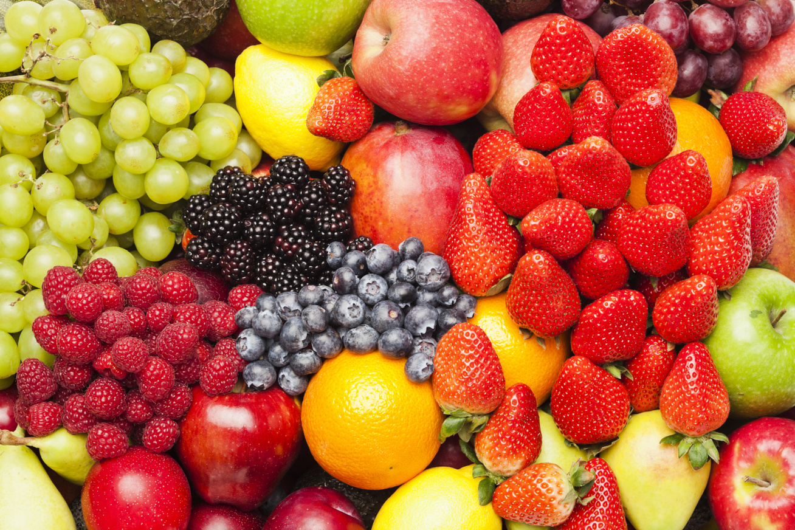

<!DOCTYPE html>
<html lang="en">
<head>
    <meta charset="UTF-8">
    <meta name="viewport" content="width=device-width, initial-scale=1.0">
    <title>Document</title>
    <script defer src="elemek.js"></script>
    <script defer src="stilusok.js"></script>
    <!-- <style>
        body {
            width: 80%;
            margin: auto;
        }

        h1 {
            border: 5px solid darkred;
            padding: 10px;
            text-align: center;
            background-color: lightgreen;
        }
        
        img {
            border-radius: 30px;
            float: right;
            transform: rotate(-5deg);
        }

        .kedvenc {
            font-weight: bold;
            text-decoration-line: underline;
            text-decoration-style: dashed;
        }
    </style> -->
</head>
<body>
    <!-- <h1>Gyümölcsök</h1>
    <p>A nyelv <strong>gyümölcs</strong>nek nevezi a növények édes és húsos termését.</p>
    
    <ul>
        <li class="kedvenc">Alma</li>
        <li>Körte</li>
        <li class="kedvenc">Eper</li>
        <li>Narancs</li>
        <li>Szőlő</li>
    </ul>
    <a href="https://bevasarlas.tesco.hu/groceries/hu-HU/shop/zoldseg-gyumolcs/gyumolcsok/all" target="_blank">TESCO</a> -->
</body>
</html>